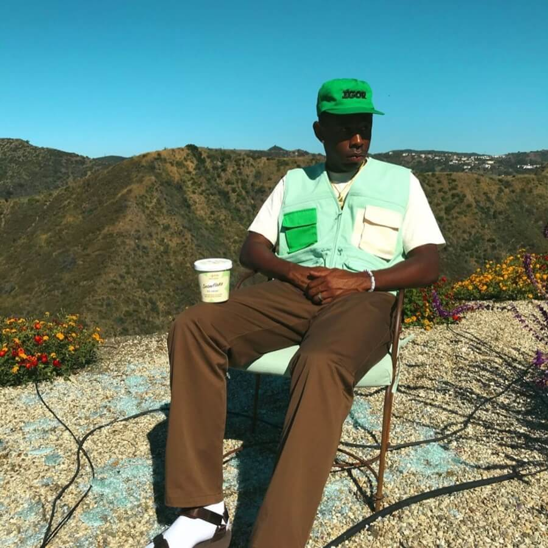

|
| Inicio |
Biografia |
Logros |
Contacto |
Tyler, the Creator |
|
Tyler Gregory Okonma (Los Ángeles, California; 6 de marzo de 1991), hijo de un padre nigeriano de ascendencia igbo y una madre estadounidense de descendencia estadounidense-africana y europea-canadiense.6 Nunca conoció a su padre, y creció en el barrio de Ladera Heights, cerca de Hawthorne.5 Cuando tenía siete años, Tyler solía sacar la portada de un álbum y la reemplazaba con una suya de un disco imaginario propio incluyendo una lista de canciones ficticias con minutos de duración- antes de que siquiera pudiera producir música. |
| A los 14, se enseñó a sí mismo a tocar el piano. En sus 12 años de escuela, atendió 12 instituciones escolares diferentes por toda el área de Los Ángeles y Sacramento. Tras graduarse, trabajó en FedEx por solo dos semanas, y en Starbucks por dos años. Okonma sacó su nombre artístico de su página de MySpace, en donde publicaba sus trabajos creativos. |
 |
 |
Hablando sobre sus años en la escuela, Tyler se refirió varias veces a sí mismo como un "payaso de clase",7 que a su vez era un niño "solitario" y "marginado", porque sus gustos en el skateboarding, el arte, o la música rock y pop estaban fuera de lo que era común dentro de los niños negros.8 Okonma aludió en esto diciendo "Me decían que era demasiado negro para encajar con los chicos blancos, y que era demasiado blanco para que estar con los chicos negros". También mencionó haber sido echado del club de arte dramático por ser demasiado "ruidoso", y de la banda de la escuela por no saber leer notas musicales. Tyler mencionaría más tarde que esos hechos lo influenciaron para mantenerse motivado para su carrera musical. |
| Todos los Derechos Reservados Andrea González 2022 © |